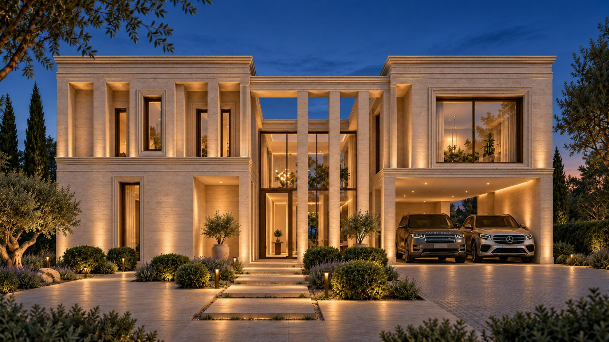
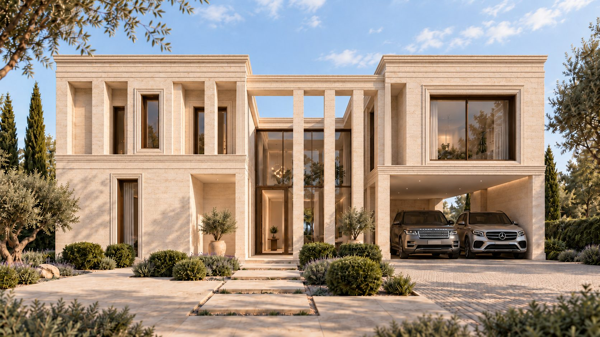
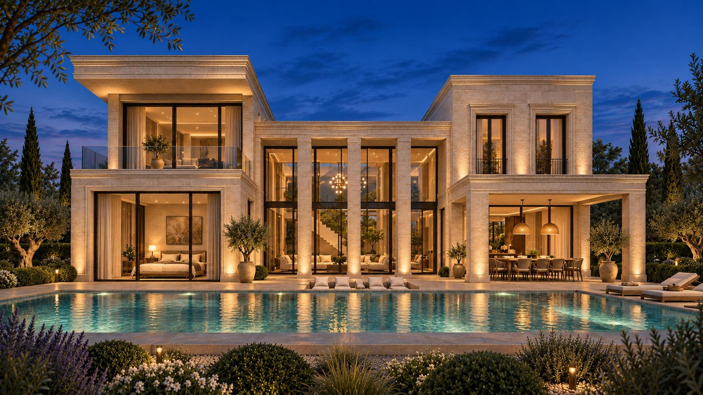
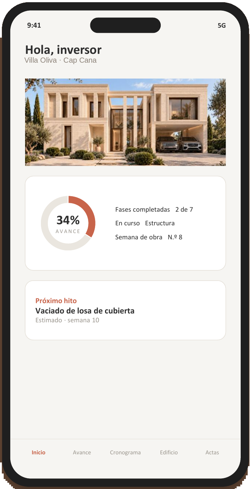
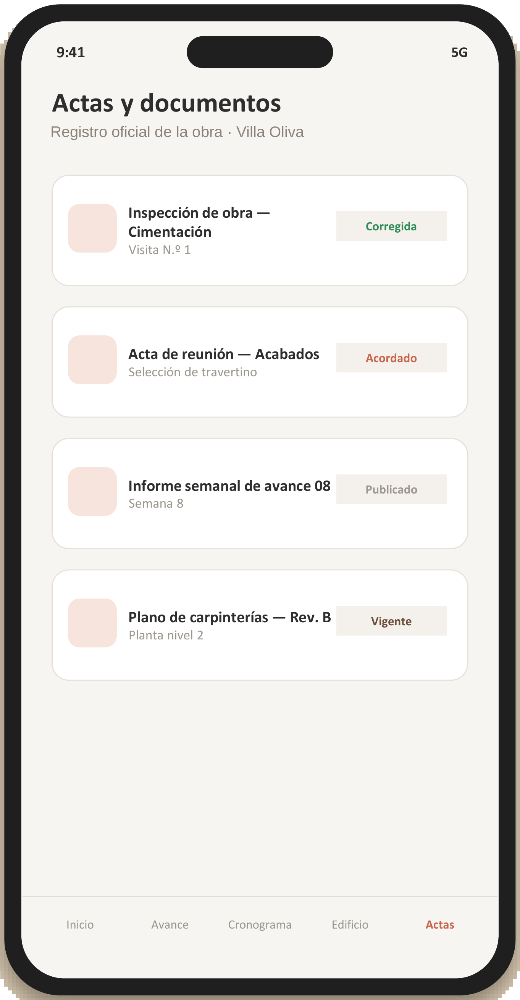

Cap Cana · República Dominicana
Clasicismo mediterráneo en el Caribe
El proyecto
Villa Oliva lleva el clasicismo mediterráneo al Caribe: dos volúmenes revestidos de travertino unidos por un gran pabellón central acristalado a doble altura, enmarcado por columnas esbeltas.
Una residencia privada de dos niveles en la Urbanización El Parque de Cap Cana, que se abre por completo al jardín, a la piscina y a la luz. Seis dormitorios con baño, sala de cine, cocina con isla y cocina caliente, suite de invitados en planta baja y un exterior pensado como una estancia más.
El arquitecto
«Quise que la casa pareciera haber estado siempre ahí: piedra clara, sombra profunda y una luz que entra por todas partes.»
Del día a la noche


DíaNocheFicha técnica
Espacios
Salón, comedor y suites se abren a la terraza y a la piscina a través de grandes paños de vidrio.
Travertino, estuco de cal y roble bajo una doble altura luminosa.
Zona social · salón a doble altura
Programa
Planta baja para la vida social y el exterior; planta alta para el descanso, con todos los dormitorios en suite y doble altura sobre el salón.
Nivel 1
Nivel 2
Pasa el dedo por una estancia
Interiorismo
Cocina
Cocina abierta de 40 m² con isla central en travertino, apoyada por cocina caliente y despensa. Roble natural, piedra y luz cálida integrada, con salida directa al jardín.
Suites
Dormitorios con baño propio en travertino, bañera exenta, ducha con luz natural y vestidor a medida en roble.
Exterior

Al caer la noche, la casa entera se refleja en la piscina.
Fachada al jardín · vista nocturna
Vivir en Cap Cana
Residencias del Parque es una comunidad cerrada con seguridad 24 horas dentro de Cap Cana, el enclave residencial más exclusivo del este de la República Dominicana: playas privadas, el mejor golf del Caribe y la mayor marina de la región, en una ciudad planificada con sus propios servicios.
Tiempos aproximados en coche desde Residencias del Parque.
Para el comprador inversor
Fuentes: Ministerio de Turismo de la República Dominicana (enero 2026); anuncios públicos de villas en Residencias del Parque (noviembre 2026). Información orientativa, no constituye asesoramiento de inversión.
Servicios e infraestructura
Suministro de Acuatur desde pozos profundos a más de 13 km de la costa, con depósitos de ~18.000 m³ diarios.
Suministro de Cenetur con generación de alta eficiencia y apoyo solar. Red de distribución soterrada.
Red de bombeo hacia planta depuradora aeróbica; el agua tratada se reutiliza para riego.
Separación, reciclaje y retirada autorizada, coordinados con los programas ambientales de Cap Cana.
Servicio al comprador · VillaTracker
Cada comprador de Villa Oliva recibe acceso a VillaTracker, la app para seguir la construcción de su villa desde el móvil, esté donde esté: avance real, fotos de obra, cronograma y documentación.
Actualización semanal · Weekly updatesPantallas ilustrativas de la aplicación


Arquitectura
GSB Guerrero-Strachan & Braun es un estudio de arquitectura con proyectos en República Dominicana, España y Emiratos Árabes Unidos. Acompañamos cada proyecto de principio a fin: diseño, permisos y ejecución.
Contacto
Escríbenos y te enviaremos el dossier completo de Villa Oliva, con plantas, acabados y condiciones.